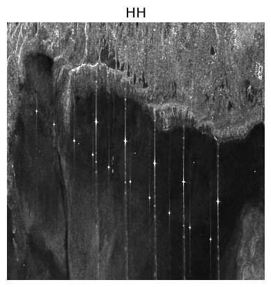
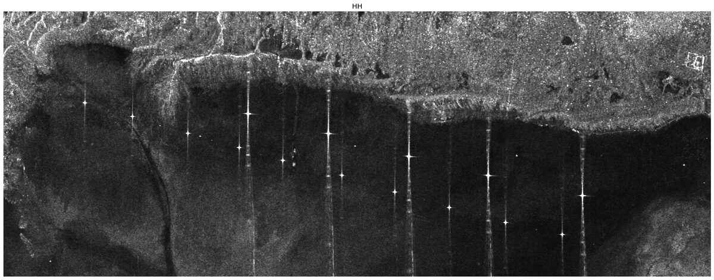
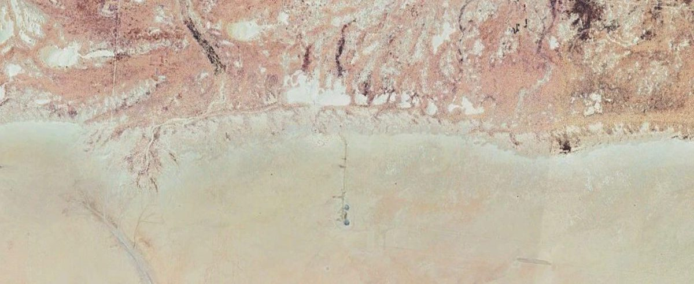

Constructive interference: scattered waves reinforce, creating bright pixels. Destructive interference: waves cancel, creating dark pixels. Their phase-dependent combination produces speckle.
Averaging linear intensity |S|² reduces brightness fluctuations: better radiometric precision, coarser spatial detail.
Range depends on pulse bandwidth; azimuth depends on the Doppler aperture. The two directions are processed and sampled differently.


